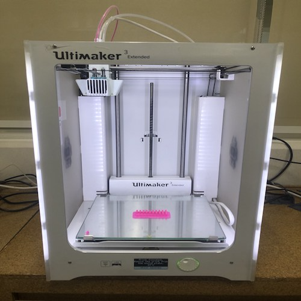

3. 3D Printing
# Goal:
Learn briefly about 3D printing and test an Ultimaker 3D printer.
# Tasks:
1- Preview a 3D printing standard test using Ultimaker Cura software.
2- Printing the standard test using an Ultimaker 3D printer.
# Procedures:
1- Open the standard test, which is bridging without support, in Cura software.
2- Alter important printing settings, such as Infill, speed, and layer thickness, and notice their impact on the printing time.
3- Click on slice and preview to know exactly how the layers will be build-up by the printer.
4- After selecting the printing settings, save the file to disk in the format "Gcode".
5- To start the printing process, ensure that the desired material is connected to the printer and the type of the material in the printer system is correct. [To change the material, click on material, then material 1, then change. After that, remove the old material and replace it with the new one.]
6- Select the desired material, which is PIA in my case. Then, click confirm and choose the design file to start the printing process.



# Challenges:
I did not face any major challenges because I have previous experience in using Cura software and Ultimaker 3D printer.